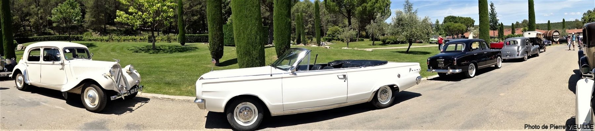
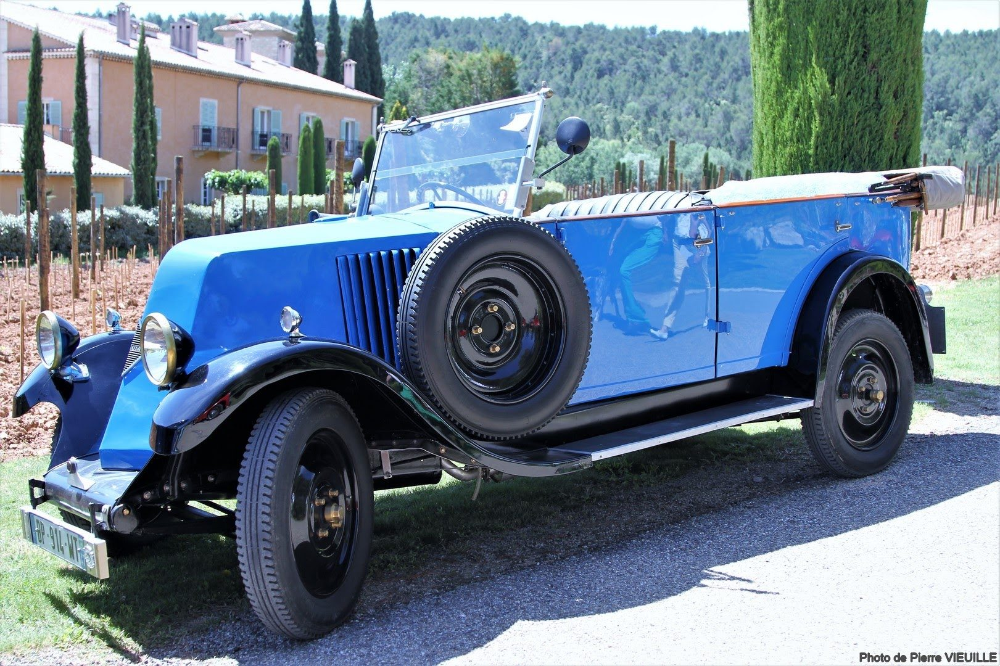
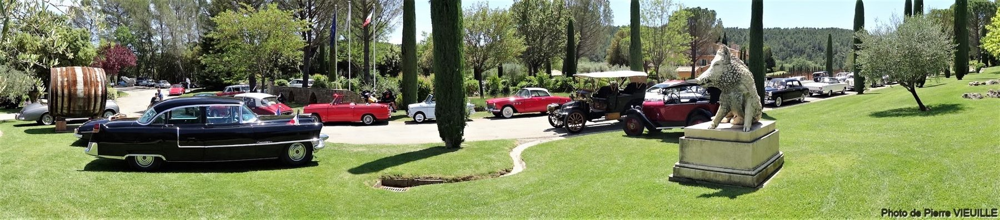
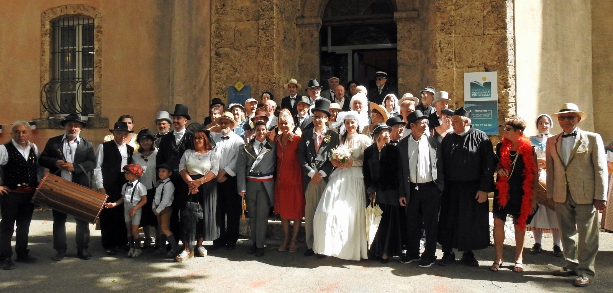

Défilé d’élégance
Chaque année, les voitures anciennes défilent dans Barjols, leurs occupants en costume d’époque.
Voir le défilé





L’Amicale des Amateurs de Véhicules Anciens (A.A.V.A) de Barjols met un point d’honneur à faire vivre le patrimoine automobile : sorties en vieilles voitures, défilés d’élégance et mariage de la Rosière, une vieille coutume barjolaise en costume d’époque.
Notre but est avant tout de partager une passion commune de l’automobile dans un esprit de camaraderie et d’entraide.
Chaque année, les voitures anciennes défilent dans Barjols, leurs occupants en costume d’époque.
Voir le défiléTous les trois ans, une coutume barjolaise renaît avec voitures anciennes et costumes d’époque.
Découvrir la traditionFort Caquier, Mane, mont Ventoux, les Sablettes… le calendrier de l’année est ouvert.
Consulter le programmeUne association fondée en 1988, qui rassemble aujourd’hui :